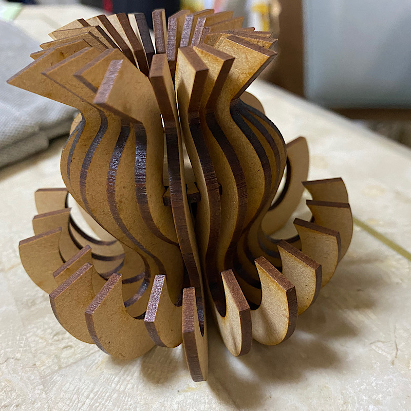
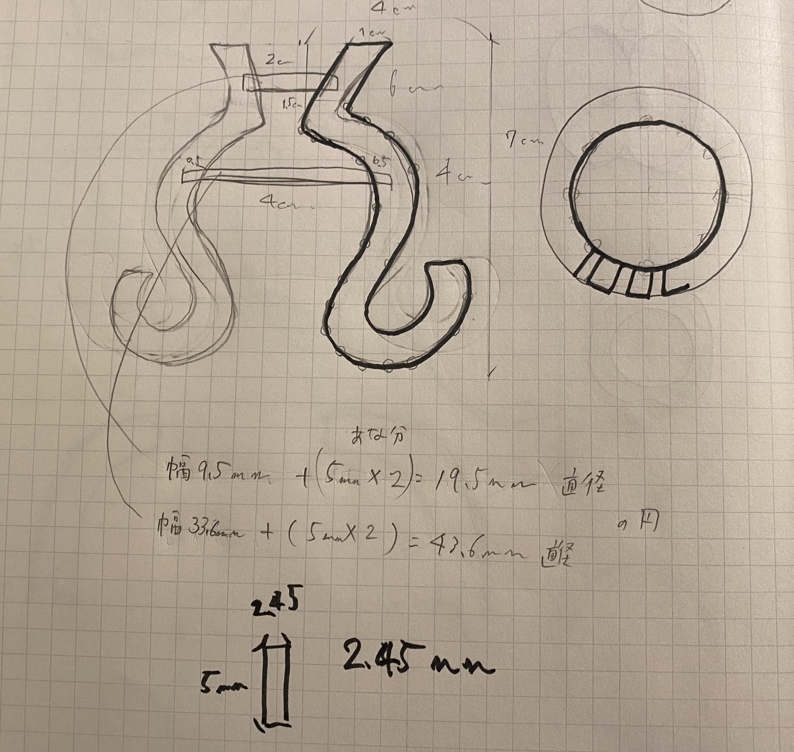
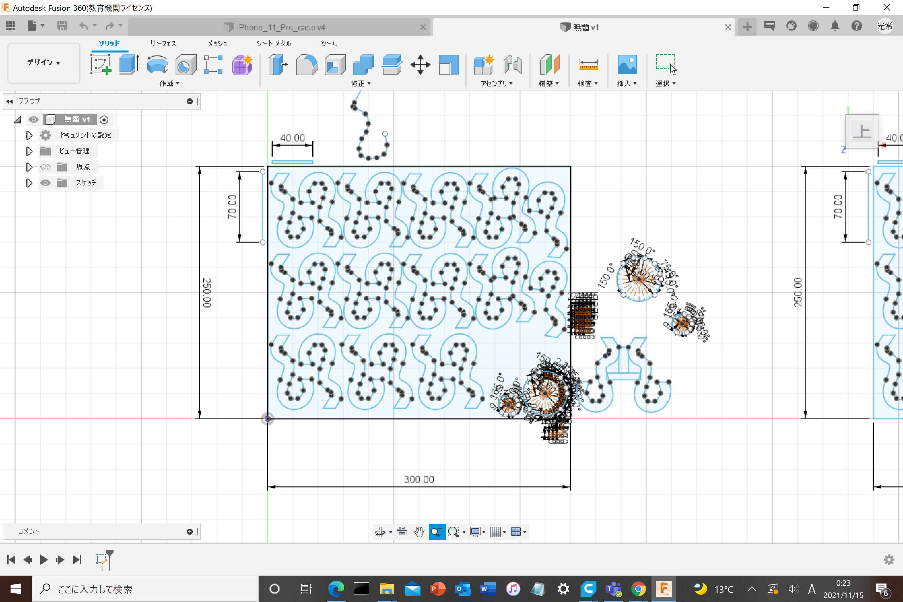
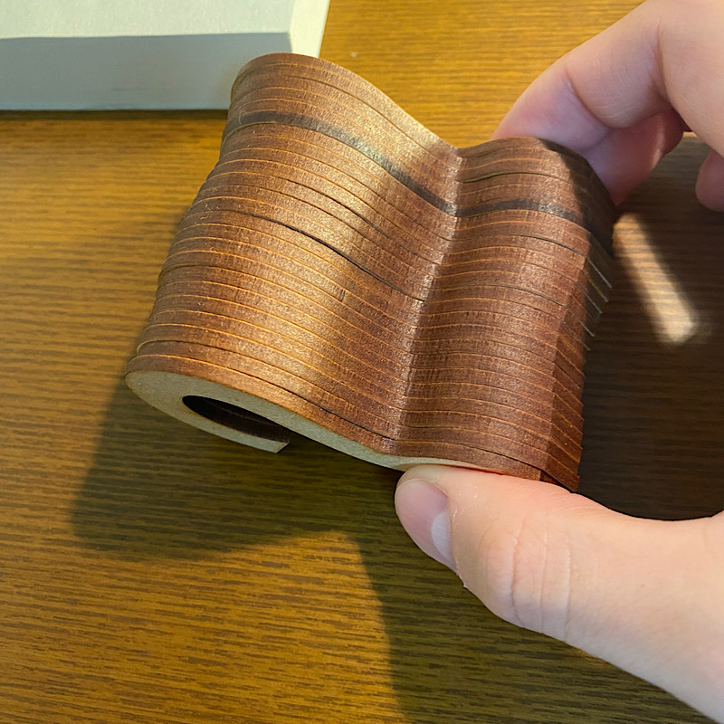

第3回
課題:人間の本能レベルに訴えかけるものを作ろう
作品名：木製ランプ

《この作品を作る経緯》
「視覚的に見て美しいと思うものは何だろう」と考えたとき、【同じ形】【曲線】が浮かんできた。
上からつるしても使えるし、下において間接照明になるようなものを作ろうと考えた。
《制作プロセス》


しっかり立つはずが、支えが一つなので、すぐばらばらに。
上手くいかず失敗。。。
感想

重ねてみると面白そう…いつか重ねてできる作品を作ろうと思う。
形にしてみて初めて気づく可能性にわくわくした。